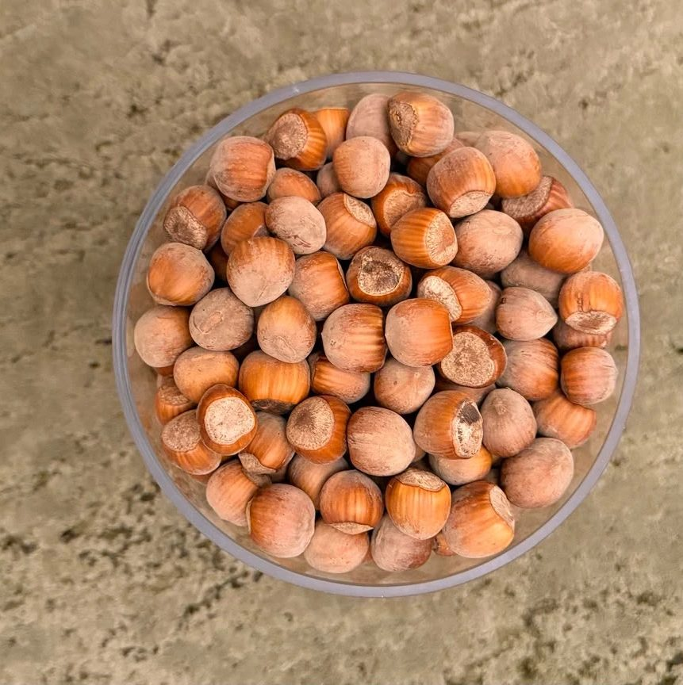
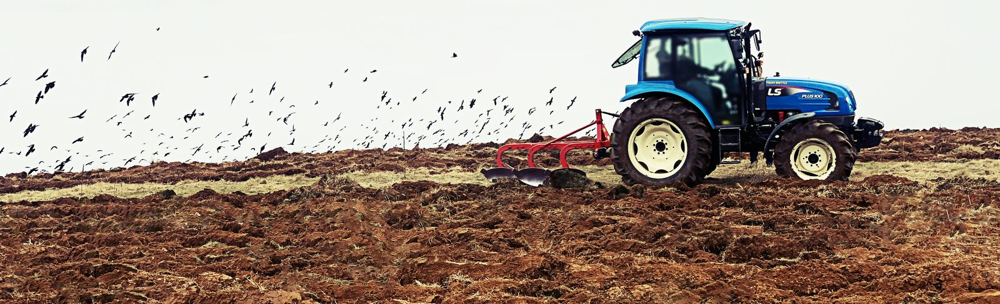
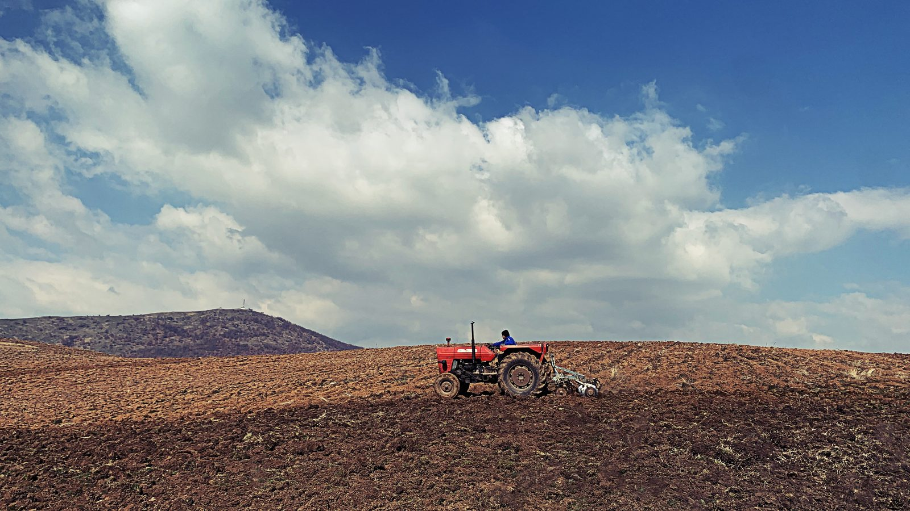
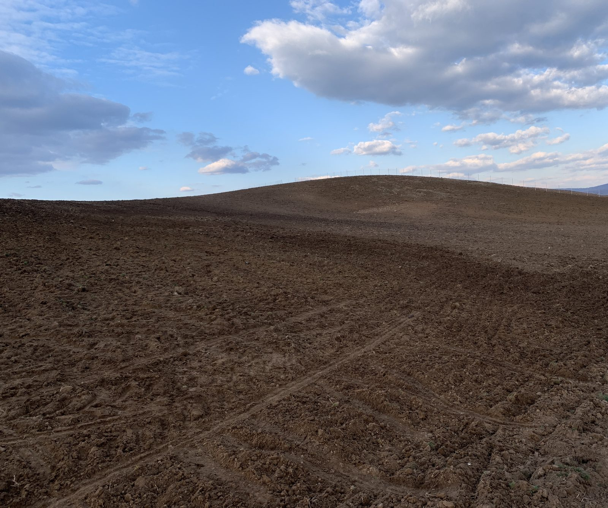
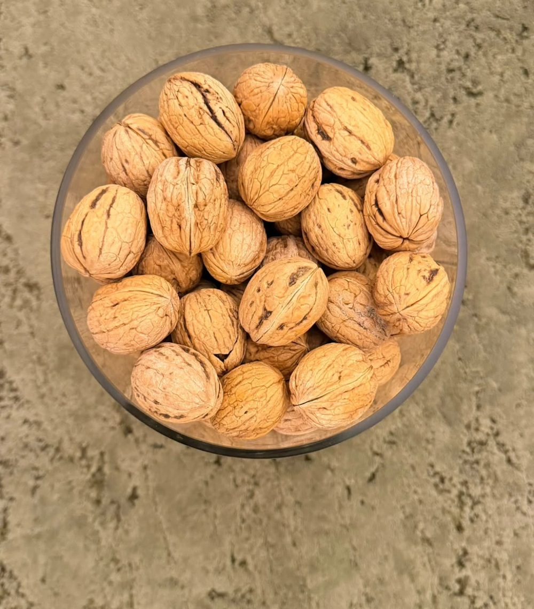
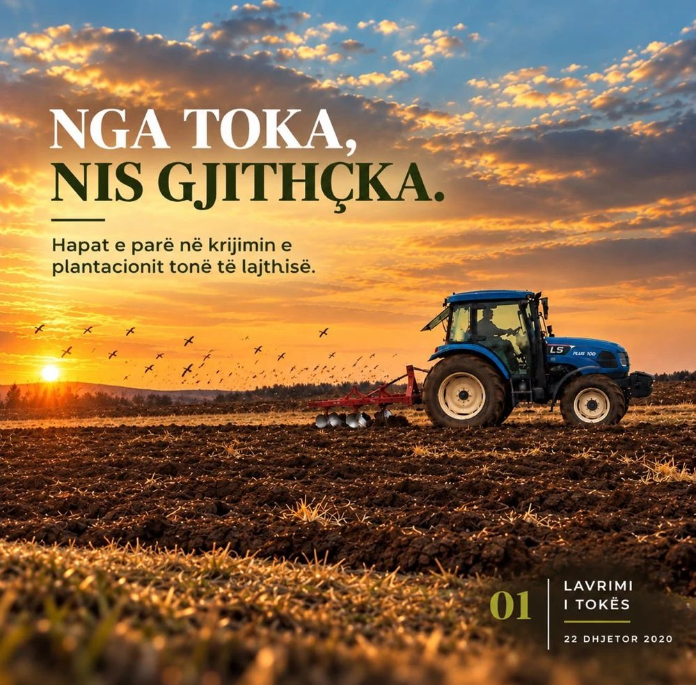
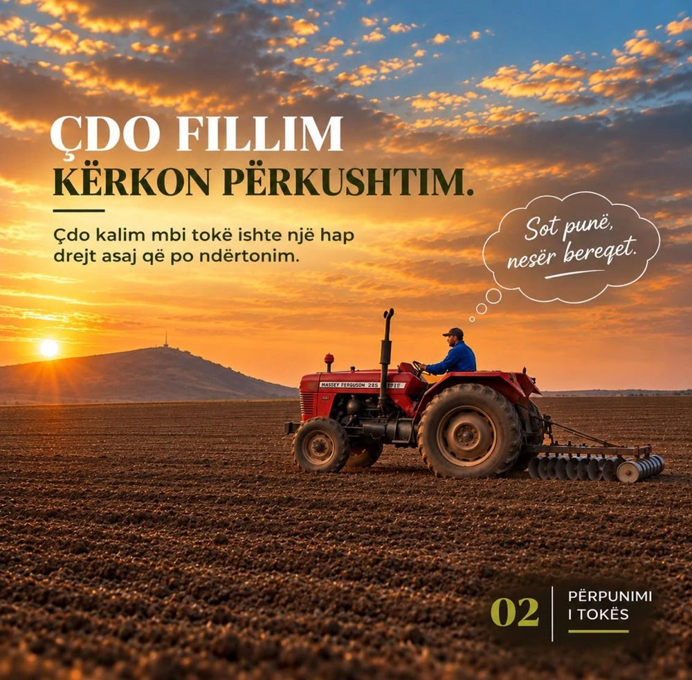
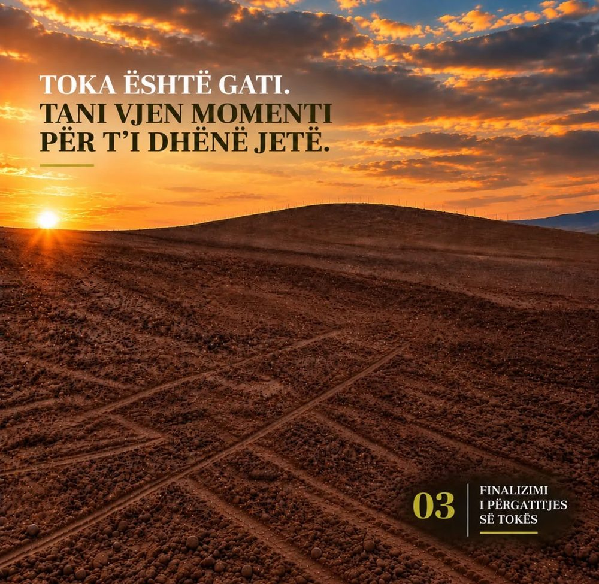
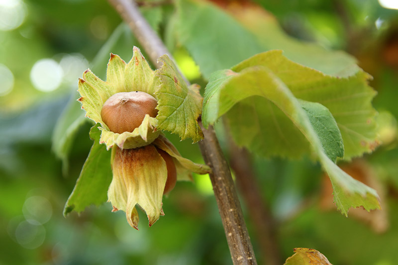
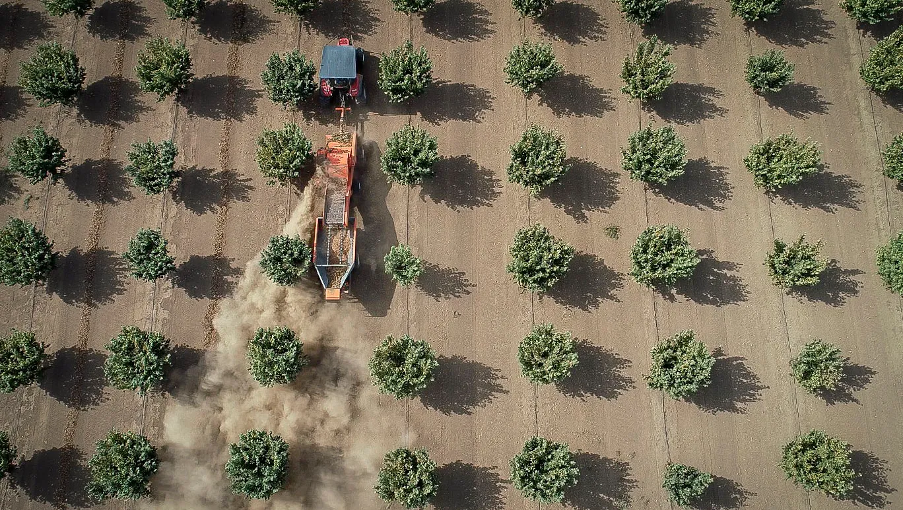

Kush Jemi
Nga toka te tryeza, me durim dhe kujdes.
DaNuts merret me kultivimin e lajthive dhe fidanëve të lajthisë në Budrikë të Epërme .
Kujdesemi për cdo etapë të punës, nga përgatitja e tokës dhe mbjellja e deri te vjelja, për t'ju ofruar lajthi cilësore dhe fidanë të përzgjedhur me kujdes..
Filozofia JonëBesojmë te puna e ndershme, kujdesi për tokën dhe durimi që kërkon një prodhim i mirë.
Çfarë Bëjmë
Kujdes në çdo fazë të kultivimit
Tri praktikat themelore që ruajnë shëndetin e plantacionit dhe cilësinë e prodhimit tonë.

01
Ne Bëjmë
Mbjellja
Çdo fidan mbillet me kujdes, duke respektuar distancat dhe kushtet e tokës që sigurojnë rritje të shëndetshme afatgjatë.

02
Ne Bëjmë
Plehërimi
Toka përgatitet dhe ushqehet vazhdimisht, për të mbështetur zhvillimin e shkurreve dhe cilësinë e prodhimit.

03
Ne Bëjmë
Ujitja
Ujitja bëhet me kohë dhe ekuilibër, veçanërisht në vitet e para të mbjelljes, kur bima ka nevojën më të madhe për ujë.
Produktet
Porosit direkt nga plantacioni
Produkt vendor nga Viti. Zgjidh sasinë dhe na lër të dhënat — ne të kontaktojmë për konfirmim.

Posta falas për porosi mbi 5 kg.
Projekti
Nga toka te korrja
Një udhëzues hap pas hapi për ngritjen e një plantacioni lajthish, bazuar në përvojën tonë.



Kushtet e tokës
- Tipi i tokës: tokë e lehtë, pjellore, me drenazh të mirë
- pH: neutral ose pak acid (6.0 – 7.0)
- Lagështia: nuk toleron tokë me ujëra të ndenjura — drenazhi është thelbësor
Përgatitja e tokës
- Lërohet thellë (60–80 cm)
- Shtohen plehra organike dhe fosforike sipas analizës së tokës
- Nivelimi i terrenit për të shmangur mbajtjen e ujit
Zgjedhja varet nga tregu dhe klima lokale.
Disa varietete të njohura
- Tonda Gentile Romana
- Nocchione
Këshillë: përdor 2–3 varietete për të ndihmuar pllenimin e ndërsjellë, sepse lajthia është bimë njëpjesore, por pllenimi kryq është më efektiv.
Distancat
- Lajthia në formë shkurre: 4 x 4 m (625 bimë/ha)
- Sistemi i mbjelljes: katror, drejtkëndësh
- Ndihma për pllenim: vendos varietete pllenues të përziera në plantacion
Koha më e mirë: nëntor – shkurt (kur bima është në pushim vegjetativ)
Hapat
- Hap gropa 40–50 cm të thella dhe të gjera
- Shto pleh organik në fund të gropës
- Vendos fidanin dhe mbuloje me dhe
- Shtrydhe tokën rreth fidanit për të larguar ajrin
- Ujitje pas mbjelljes
- Ujitja: e domosdoshme vitet e para
- Plehërimi:
- Përdor azot në pranverë
- Fosfor dhe kalium në vjeshtë
- Prunimi:
- 2–3 vitet e para formohet struktura e bimës (shkurre ose pemë)
- Heq degët e thata dhe ato që prekin tokën
- Heqja e barërave: e rëndësishme për rritje të shëndetshme
- Mbrojtja nga sëmundjet:
- Monitorim për sëmundje si: monilia, bakterioza, kërpudhat
- Mund të nevojiten trajtime me fungicide ose insekticide sipas rastit
- Koha e parë e prodhimit: 3–4 vite pas mbjelljes
- Prodhim i plotë: pas 10–12 viteve
- Korrja:
- Fundi i gushtit – shtator
- Frutat bien vetë në tokë ose shkundet pema
- Tharja në vend të ajrosur për ruajtje më të gjatë
Nga Ajri
Pamja e plantacionit të lajthive me dron
Shijoni një pamje mahnitëse të plantacionit tonë nga ajri dhe nga afër — kujdesi dhe përkushtimi ynë, të kombinuara me teknologji moderne.
- Pamje ajrore të fushave të gjera
- Detaje të kujdesit dhe kultivimit të pemëve
Galeria
Nga fusha jonë
 Plantacioni
Plantacioni

Fruti i Freskët
Kultivimi
Kontakti
Na kontaktoni
Për fidanë, produkt ose bashkëpunim — na shkruani, do t'ju përgjigjemi së shpejti.
-
Lokacioni
Budrika e Epërme, Viti, Kosovë
-
Email
info@danuts.it -
Telefoni
+383 49 794 177